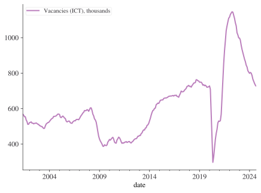
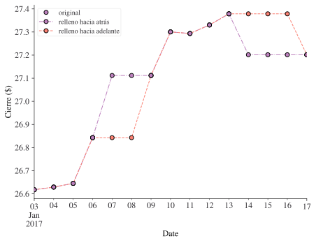
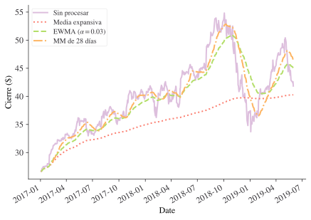
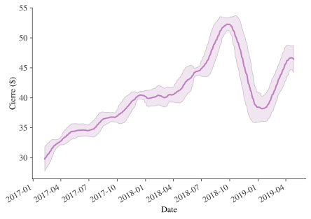
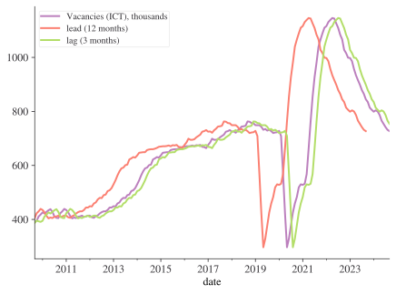

from datetime import datetime
now = datetime.now()
print(now)2026-10-07 02:15:01.077876Este capítulo te mostrará cómo trabajar con fechas y horas en Python. A primera vista, las fechas y las horas parecen simples. Las usas todo el tiempo en tu vida cotidiana y no parecen causar mucha confusión. Sin embargo, cuanto más aprendes sobre fechas y horas, más complicadas parecen volverse. Para entrar en calor, intenta responder estas tres preguntas aparentemente sencillas:
Seguro que sabes que no todos los años tienen 365 días, pero ¿conoces la regla completa para determinar si un año es bisiesto?
Quizá recordaste que en muchas partes del mundo se usa el horario de verano (DST, por sus siglas en inglés), de modo que algunos días tienen 23 horas y otros 25. Quizá no sabías que algunos minutos tienen 61 segundos, porque de vez en cuando se añaden segundos intercalares, ya que la rotación de la Tierra se está desacelerando gradualmente.
Las fechas y las horas son difíciles porque tienen que conciliar dos fenómenos físicos (la rotación de la Tierra y su órbita alrededor del Sol) con toda una serie de fenómenos geopolíticos, como los meses, las zonas horarias y el horario de verano.
Este capítulo no te enseñará hasta el último detalle sobre fechas y horas, pero te dará una base sólida de habilidades prácticas que te ayudarán con los desafíos habituales del análisis de datos. En particular, una tarea de programación relacionada con el tiempo que no cubriremos aquí es cómo ejecutar scripts o funciones con una frecuencia determinada, es decir, cómo programar tareas.
Necesitarás instalar el paquete seaborn para este capítulo. Este capítulo usa la versión de nueva generación de seaborn, que se puede instalar ejecutando lo siguiente en la línea de comandos (es decir, en la terminal):
uv run pip install --pre seabornTambién usaremos el paquete pandas y el paquete numérico numpy.
Un punto en el tiempo, tal como se representa en ciencia de datos, se compone de una hora y una fecha. Estos dos elementos se combinan en un datetime.
El objeto datetime es el objeto de tiempo fundamental en Python. Es útil conocerlo antes de pasar a las operaciones con datetimes usando pandas (que es lo que probablemente usarás en la práctica). Los objetos datetime de Python registran el año, el mes, el día, la hora, el segundo y el microsegundo. Importemos la clase que gestiona los datetimes (cuyos objetos son de tipo datetime.datetime) y echémosle un vistazo.
from datetime import datetime
now = datetime.now()
print(now)2026-10-07 02:15:01.077876La mayoría de las personas estarán más acostumbradas a trabajar con día-mes-año, mientras que algunas incluso usan mes-día-año, ¡lo cual claramente no tiene ningún sentido! Pero ten en cuenta que datetime sigue la norma ISO 8601, el estándar internacional para datetimes, que usa año-mes-día-horas:minutos:segundos, con las horas en formato de 24 horas. Este es también el formato que deberías usar al programar.
Podemos ver que la variable que creamos tiene métodos como year, month, day, etc., hasta microsecond. Al llamar a estos métodos sobre el objeto now que creamos, devolverán el dato correspondiente.
Try calling the year, month, and day functions on an instance of datetime.now().
Ten en cuenta que, una vez creado, now no se actualiza solo: queda congelado en el momento en que se creó.
Para crear un datetime a partir de información numérica dada, el comando es:
specific_datetime = datetime(2019, 11, 28)
print(specific_datetime)2019-11-28 00:00:00Para que el código sea más claro y legible, también puedes llamarlo usando argumentos con nombre: datetime(year=2019, month=11, day=28).
Una de las transformaciones más comunes que probablemente necesitarás hacer con las fechas es pasar de un string, como “4 July 2002”, a un datetime. Puedes hacerlo con datetime.strptime(). Aquí tienes un ejemplo:
date_string = "16 February in 2002"
datetime.strptime(date_string, "%d %B in %Y")datetime.datetime(2002, 2, 16, 0, 0)¿Qué está pasando? El patrón del string de fecha es “día mes ‘in’ año”. La función strptime() de Python tiene códigos para las distintas partes de un datetime (y las distintas formas en que pueden expresarse). Por ejemplo, si tuvieras la versión corta del mes en lugar de la larga, sería:
date_string = "16 Feb in 2002"
datetime.strptime(date_string, "%d %b in %Y")datetime.datetime(2002, 2, 16, 0, 0)Por supuesto, no siempre querrás preocuparte por todos los detalles de lo que estás pasando, y el módulo integrado dateutil está aquí para analizar formatos de manera flexible si lo necesitas (¡aunque lo explícito es mejor que lo implícito!):
from dateutil.parser import parse
date_string = "03 Feb 02"
print(parse(date_string))
date_string = "3rd February 2002"
print(parse(date_string))2002-02-03 00:00:00
2002-02-03 00:00:00¿Y convertir un datetime en un string? También podemos hacerlo, gracias a los mismos códigos.
now.strftime("%A, %m, %Y")'Wednesday, 10, 2026'Puedes encontrar una lista casi completa de los códigos de strftime en https://strftime.org/, pero por comodidad se reproducen en la tabla siguiente.
| Código | Significado | Ejemplo |
|---|---|---|
| %a | Día de la semana como nombre abreviado según la configuración regional. | Mon |
| %A | Día de la semana como nombre completo según la configuración regional. | Monday |
| %w | Día de la semana como número decimal, donde 0 es domingo y 6 es sábado. | 1 |
| %d | Día del mes como número decimal con ceros a la izquierda. | 30 |
| %-d | Día del mes como número decimal. (Depende de la plataforma) | 30 |
| %b | Mes como nombre abreviado según la configuración regional. | Sep |
| %B | Mes como nombre completo según la configuración regional. | September |
| %m | Mes como número decimal con ceros a la izquierda. | 09 |
| %-m | Mes como número decimal. (Depende de la plataforma) | 9 |
| %y | Año sin siglo como número decimal con ceros a la izquierda. | 13 |
| %Y | Año con siglo como número decimal. | 2013 |
| %H | Hora (reloj de 24 horas) como número decimal con ceros a la izquierda. | 07 |
| %-H | Hora (reloj de 24 horas) como número decimal. (Depende de la plataforma) | 7 |
| %I | Hora (reloj de 12 horas) como número decimal con ceros a la izquierda. | 07 |
| %-I | Hora (reloj de 12 horas) como número decimal. (Depende de la plataforma) | 7 |
| %p | Equivalente de AM o PM según la configuración regional. | AM |
| %M | Minuto como número decimal con ceros a la izquierda. | 06 |
| %-M | Minuto como número decimal. (Depende de la plataforma) | 6 |
| %S | Segundo como número decimal con ceros a la izquierda. | 05 |
| %-S | Segundo como número decimal. (Depende de la plataforma) | 5 |
| %f | Microsegundo como número decimal, con ceros a la izquierda. | 000000 |
| %z | Desfase UTC en la forma +HHMM o -HHMM (string vacío si el objeto es naive). | |
| %Z | Nombre de la zona horaria (string vacío si el objeto es naive). | |
| %j | Día del año como número decimal con ceros a la izquierda. | 273 |
| %-j | Día del año como número decimal. (Depende de la plataforma) | 273 |
| %U | Número de semana del año (con el domingo como primer día de la semana) como número decimal con ceros a la izquierda. | 39 |
| %W | Número de semana del año (con el lunes como primer día de la semana) como número decimal. | 39 |
| %c | Representación de fecha y hora adecuada según la configuración regional. | Mon Sep 30 07:06:05 2013 |
| %x | Representación de fecha adecuada según la configuración regional. | 09/30/13 |
| %X | Representación de hora adecuada según la configuración regional. | 07:06:05 |
| %% | Un carácter ‘%’ literal. | % |
Muchas de las operaciones que esperarías que funcionaran con datetimes funcionan, por ejemplo:
now > specific_datetimeTrueAdemás de registrar o comparar un único datetime, hay muchas ocasiones en las que nos interesarán las diferencias entre datetimes. Creemos una y luego comprobemos su tipo.
time_diff = now - datetime(year=2020, month=1, day=1)
print(time_diff)2471 days, 2:15:01.077876Está en el formato de días, horas, minutos, segundos y microsegundos. Comprobemos el tipo con type():
type(time_diff)datetime.timedeltaEs de tipo datetime.timedelta.
Los objetos de fecha y hora pueden clasificarse como aware (conscientes) o naive (ingenuos) según incluyan o no información de zona horaria; un objeto aware puede ubicarse con respecto a otros objetos aware, pero un objeto naive no contiene información suficiente para ubicarse sin ambigüedad con respecto a otros objetos de fecha/hora. Hasta ahora hemos trabajado con objetos datetime naive.
El paquete pytz puede ayudarte a trabajar con zonas horarias. Tiene dos casos de uso principales: i) localizar datetimes naive para que pasen a ser aware, es decir, que tengan una zona horaria, y ii) convertir un datetime de una zona horaria a otra.
La zona horaria predeterminada para programar es UTC. ‘UTC’ es el Tiempo Universal Coordinado. Es el sucesor del Tiempo Medio de Greenwich (GMT) y de las diversas definiciones del Tiempo Universal, aunque es distinto de ellos. UTC es hoy el estándar mundial para regular los relojes y la medición del tiempo.
Todas las demás zonas horarias se definen en relación con UTC e incluyen desfases como UTC+0800, es decir, horas que se suman o restan a UTC para obtener la hora local. En UTC no hay horario de verano, lo que la convierte en una zona horaria útil para hacer aritmética de fechas sin preocuparte por la confusión y las ambigüedades causadas por los cambios de horario de verano, por que tu país cambie de zona horaria o por computadoras portátiles que pasan por varias zonas horarias.
Ahora pasamos a las operaciones vectorizadas con datetimes usando el potente paquete numpy (que es lo que usa pandas). numpy tiene su propia versión de datetime, llamada np.datetime64, y es muy eficiente a gran escala. Veámosla en acción:
import numpy as np
date = np.array("2020-01-01", dtype=np.datetime64)
datearray('2020-01-01', dtype='datetime64[D]')La ‘D’ nos indica que la unidad más pequeña aquí son los días. Podemos crear fácilmente un vector de fechas a partir de este objeto:
date + range(32)array(['2020-01-01', '2020-01-02', '2020-01-03', '2020-01-04',
'2020-01-05', '2020-01-06', '2020-01-07', '2020-01-08',
'2020-01-09', '2020-01-10', '2020-01-11', '2020-01-12',
'2020-01-13', '2020-01-14', '2020-01-15', '2020-01-16',
'2020-01-17', '2020-01-18', '2020-01-19', '2020-01-20',
'2020-01-21', '2020-01-22', '2020-01-23', '2020-01-24',
'2020-01-25', '2020-01-26', '2020-01-27', '2020-01-28',
'2020-01-29', '2020-01-30', '2020-01-31', '2020-02-01'],
dtype='datetime64[D]')Observa cómo el último día pasa al mes siguiente.
Si creas un datetime con una precisión mayor que el día, numpy la deducirá a partir de la entrada; por ejemplo, esto da una resolución de hasta segundos.
np.datetime64("2020-01-01 09:00")np.datetime64('2020-01-01T09:00')Sin embargo, una advertencia sobre numpy y los datetimes: cuanto más precisión usas (y puedes llegar hasta femtosegundos, 10^{-15} segundos), menor es el rango de fechas que puedes alcanzar. Una elección popular de precisión es datetime64[ns], que puede codificar tiempos desde el año 1678 d. C. hasta el 2262 d. C. Trabajar con segundos te permite ir desde 2.9\times 10^9 a. C. hasta 2.9\times 10^9 d. C.
pandas es la herramienta principal para el análisis de series temporales en Python. El objeto básico es un timestamp. La función pd.to_datetime() crea timestamps a partir de strings que razonablemente podrían representar datetimes. Veamos un ejemplo de uso de pd.to_datetime() para crear un timestamp y luego examinémoslo.
import pandas as pd
date = pd.to_datetime("16th of February, 2020")
dateTimestamp('2020-02-16 00:00:00')Es de tipo Timestamp y puedes ver que tiene muchas de las mismas propiedades que la clase integrada de Python datetime.datetime del capítulo anterior. Al igual que con esta, el valor predeterminado de tz (zona horaria) y tzinfo es None. Sin embargo, hay algunas propiedades adicionales, como freq para la frecuencia, que serán muy útiles a la hora de manipular series temporales en lugar de solo uno o dos datetimes.
Hay dos escenarios principales en los que podrías crear series temporales con pandas: i) crear una desde cero o ii) leer datos desde un archivo. Veamos primero algunas formas de hacer i).
Puedes crear una serie temporal con pandas tomando una fecha creada como arriba y extendiéndola con la función timedelta de pandas:
date + pd.to_timedelta(np.arange(12), "D")DatetimeIndex(['2020-02-16', '2020-02-17', '2020-02-18', '2020-02-19',
'2020-02-20', '2020-02-21', '2020-02-22', '2020-02-23',
'2020-02-24', '2020-02-25', '2020-02-26', '2020-02-27'],
dtype='datetime64[ns]', freq=None)Esto ha creado un índice datetime de tipo datetime65[ns] (recuerda que un índice es un tipo especial de columna de pandas), donde “ns” indica resolución de nanosegundos.
Otro método es crear un rango de fechas (pasa una frecuencia con el argumento de palabra clave freq=):
pd.date_range(start="2018/1/1", end="2018/1/8")DatetimeIndex(['2018-01-01', '2018-01-02', '2018-01-03', '2018-01-04',
'2018-01-05', '2018-01-06', '2018-01-07', '2018-01-08'],
dtype='datetime64[ns]', freq='D')Otra forma de crear rangos es especificar el número de periodos y la frecuencia:
pd.date_range("2018-01-01", periods=3, freq="h")DatetimeIndex(['2018-01-01 00:00:00', '2018-01-01 01:00:00',
'2018-01-01 02:00:00'],
dtype='datetime64[ns]', freq='h')Siguiendo lo visto en el capítulo anterior sobre zonas horarias, también puedes localizar zonas horarias directamente en dataframes de pandas:
dti = pd.date_range("2018-01-01", periods=3, freq="h").tz_localize("UTC")
dti.tz_convert("US/Pacific")DatetimeIndex(['2017-12-31 16:00:00-08:00', '2017-12-31 17:00:00-08:00',
'2017-12-31 18:00:00-08:00'],
dtype='datetime64[ns, US/Pacific]', freq='h')Ahora veamos cómo convertir datos que se han leído con un tipo que no es datetime en un vector de datetimes. Esto ocurre constantemente en la práctica. Leeremos algunos datos sobre vacantes de empleo en información y comunicación, código ONS UNEM-JP9P, y luego intentaremos transformar la columna “date” en una columna datetime de pandas.
import requests
url = "https://api.beta.ons.gov.uk/v1/data?uri=/employmentandlabourmarket/peopleinwork/employmentandemployeetypes/timeseries/jp9z/lms/previous/v108"
# Get the data from the ONS API:
json_data = requests.get(url).json()
df = pd.DataFrame(pd.json_normalize(json_data["months"]))
df["value"] = pd.to_numeric(df["value"])
df = df[["date", "value"]]
df = df.rename(columns={"value": "Vacancies (ICT), thousands"})
df.head()| date | Vacancies (ICT), thousands | |
|---|---|---|
| 0 | 2001 MAY | 568 |
| 1 | 2001 JUN | 563 |
| 2 | 2001 JUL | 554 |
| 3 | 2001 AUG | 554 |
| 4 | 2001 SEP | 536 |
Ya tenemos los datos. Veamos los tipos de columna con los que llegaron.
df.info()<class 'pandas.core.frame.DataFrame'>
RangeIndex: 281 entries, 0 to 280
Data columns (total 2 columns):
# Column Non-Null Count Dtype
--- ------ -------------- -----
0 date 281 non-null object
1 Vacancies (ICT), thousands 281 non-null int64
dtypes: int64(1), object(1)
memory usage: 4.5+ KBEste es el tipo predeterminado ‘object’, pero queremos que la columna de fecha tenga datetime64[ns], que es un tipo datetime. De nuevo, usamos pd.to_datetime():
df["date"] = pd.to_datetime(df["date"])
df["date"].head()/var/folders/8n/n8x6tb9n5tz72hhnwdf7l04w0000gn/T/ipykernel_46305/3535541307.py:1: UserWarning: Could not infer format, so each element will be parsed individually, falling back to `dateutil`. To ensure parsing is consistent and as-expected, please specify a format.
df["date"] = pd.to_datetime(df["date"])0 2001-05-01
1 2001-06-01
2 2001-07-01
3 2001-08-01
4 2001-09-01
Name: date, dtype: datetime64[ns]En este caso, la conversión del formato de los datos introducidos, “2001 MAY”, a datetime funcionó directamente. pd.to_datetime siempre intentará deducir el formato, pero no siempre lo logrará.
¿Qué pasa si tenemos una columna datetime más difícil de leer? Esto ocurre con frecuencia en la práctica, así que vale la pena explorar un ejemplo. Creemos algunos datos aleatorios con fechas en un formato inusual: primero el mes, luego el año y luego el día, por ejemplo “1, ’19, 29”, etc.
small_df = pd.DataFrame({"date": ["1, '19, 22", "1, '19, 23"], "values": ["1", "2"]})
small_df["date"]0 1, '19, 22
1 1, '19, 23
Name: date, dtype: objectAhora bien, si pasáramos esto por pd.to_datetime sin más información, interpretaría mal, por ejemplo, la primera fecha como 2022-01-19. Así que debemos darle a pd.to_datetime algo más de información para ayudarle. Podemos pasar un argumento de palabra clave format= con el formato que tiene el datetime. Aquí usaremos %m para el mes en formato numérico, %y para el año con 2 dígitos y %d para el día con 2 dígitos. También podemos añadir los otros caracteres, como ' y ,. Puedes encontrar una lista de identificadores de formato de datetime más arriba o en https://strftime.org/.
pd.to_datetime(small_df["date"], format="%m, '%y, %d")0 2019-01-22
1 2019-01-23
Name: date, dtype: datetime64[ns]Nuestros datos, actualmente en df, se leyeron como si correspondieran al inicio del mes, pero se refieren al mes ya transcurrido, por lo que deberían corresponder al final del mes. Por suerte, podemos cambiarlo usando un desplazamiento temporal (offset).
df["date"] = df["date"] + pd.offsets.MonthEnd()
df.head()| date | Vacancies (ICT), thousands | |
|---|---|---|
| 0 | 2001-05-31 | 568 |
| 1 | 2001-06-30 | 563 |
| 2 | 2001-07-31 | 554 |
| 3 | 2001-08-31 | 554 |
| 4 | 2001-09-30 | 536 |
Aunque aquí usamos el desplazamiento MonthEnd, hay muchos desplazamientos diferentes disponibles. Puedes encontrar una tabla completa de desplazamientos de fecha aquí.
.dtCuando tienes una columna datetime, puedes usar el accessor .dt para obtener mucha información útil de ella, como minute, month, etc. Algunos, que son funciones en lugar de simples accesos a propiedades subyacentes, van seguidos de paréntesis, (), precisamente porque son funciones. Aquí tienes algunos ejemplos útiles:
print("Using `dt.day_name()`")
print(df["date"].dt.day_name().head())
print("Using `dt.isocalendar()`")
print(df["date"].dt.isocalendar().head())
print("Using `dt.month`")
print(df["date"].dt.month.head())Using `dt.day_name()`
0 Thursday
1 Saturday
2 Tuesday
3 Friday
4 Sunday
Name: date, dtype: object
Using `dt.isocalendar()`
year week day
0 2001 22 4
1 2001 26 6
2 2001 31 2
3 2001 35 5
4 2001 39 7
Using `dt.month`
0 5
1 6
2 7
3 8
4 9
Name: date, dtype: int32Para las siguientes partes, estableceremos la columna datetime como índice del dataframe. Esta es la configuración estándar que probablemente querrás usar al trabajar con series temporales.
df = df.set_index("date")
df.head()| Vacancies (ICT), thousands | |
|---|---|
| date | |
| 2001-05-31 | 568 |
| 2001-06-30 | 563 |
| 2001-07-31 | 554 |
| 2001-08-31 | 554 |
| 2001-09-30 | 536 |
Ahora, si observamos las primeras entradas del índice del dataframe (un índice datetime) usando head como antes, veremos que el parámetro freq= está establecido en None.
df.index[:5]DatetimeIndex(['2001-05-31', '2001-06-30', '2001-07-31', '2001-08-31',
'2001-09-30'],
dtype='datetime64[ns]', name='date', freq=None)Esto se puede establecer para todo el dataframe con la función asfreq():
df = df.asfreq("M")
df.index[:5]/var/folders/8n/n8x6tb9n5tz72hhnwdf7l04w0000gn/T/ipykernel_46305/2067773505.py:1: FutureWarning: 'M' is deprecated and will be removed in a future version, please use 'ME' instead.
df = df.asfreq("M")DatetimeIndex(['2001-05-31', '2001-06-30', '2001-07-31', '2001-08-31',
'2001-09-30'],
dtype='datetime64[ns]', name='date', freq='ME')Aunque la mayoría de las veces no importa que freq=None, algunas operaciones de agregación necesitan conocer la frecuencia de la serie temporal para funcionar, y es buena práctica establecerla si tus datos son regulares. También puedes usar asfreq para pasar de una frecuencia mayor a una menor: se tomará la última entrada de la frecuencia mayor que coincida con la frecuencia menor; por ejemplo, al pasar de meses a años, se usaría el valor de diciembre.
Ten en cuenta que intentar establecer la frecuencia cuando tu índice datetime no corresponde a una frecuencia concreta provocará errores o problemas.
En la tabla siguiente tienes algunas frecuencias útiles; todas ellas también se pueden usar con pd.to_datetime().
| Código | Representa |
|---|---|
| D | Día natural |
| W | Semanal |
| M | Fin de mes |
| Q | Fin de trimestre |
| A | Fin de año |
| H | Horas |
| T | Minutos |
| S | Segundos |
| B | Día hábil |
| BM | Fin de mes hábil |
| BQ | Fin de trimestre hábil |
| BA | Fin de año hábil |
| BH | Horas hábiles |
| MS | Inicio de mes |
| QS | Inicio de trimestre |
| W-SUN | Semanas que comienzan en domingo (igual para otros días) |
| 2M | Cada 2 meses (funciona con otras combinaciones de números y códigos) |
Una vez que has conseguido poner tu serie temporal en un dataframe, quizá convirtiendo en el proceso una columna de tipo string en una columna de tipo datetime, ¡a menudo simplemente quieres verla! Podemos lograrlo con el comando plot(), siempre que tengamos un índice datetime.
df.plot();
Ahora que nuestros datos tienen un índice datetime, algunas operaciones comunes de series temporales nos resultan muy fáciles.
Con bastante frecuencia, querrás cambiar la frecuencia de una serie temporal. Un dataframe basado en un índice temporal lo facilita mediante la función resample(). A resample() hay que indicarle cómo quieres remuestrear los datos, por ejemplo mediante la media o la mediana. Aquí tienes un ejemplo que remuestrea los datos mensuales a anuales tomando la media:
df.resample("A").mean()/var/folders/8n/n8x6tb9n5tz72hhnwdf7l04w0000gn/T/ipykernel_46305/311401334.py:1: FutureWarning: 'A' is deprecated and will be removed in a future version, please use 'YE' instead.
df.resample("A").mean()| Vacancies (ICT), thousands | |
|---|---|
| date | |
| 2001-12-31 | 540.625000 |
| 2002-12-31 | 517.500000 |
| 2003-12-31 | 504.166667 |
| 2004-12-31 | 551.916667 |
| 2005-12-31 | 544.666667 |
| 2006-12-31 | 529.500000 |
| 2007-12-31 | 576.333333 |
| 2008-12-31 | 544.583333 |
| 2009-12-31 | 402.750000 |
| 2010-12-31 | 424.166667 |
| 2011-12-31 | 413.250000 |
| 2012-12-31 | 423.916667 |
| 2013-12-31 | 480.250000 |
| 2014-12-31 | 592.416667 |
| 2015-12-31 | 655.166667 |
| 2016-12-31 | 671.250000 |
| 2017-12-31 | 704.750000 |
| 2018-12-31 | 742.666667 |
| 2019-12-31 | 734.166667 |
| 2020-12-31 | 487.500000 |
| 2021-12-31 | 843.416667 |
| 2022-12-31 | 1092.083333 |
| 2023-12-31 | 894.500000 |
| 2024-12-31 | 767.888889 |
Como el remuestreo no es más que un tipo especial de agregación, funciona con todas las funciones habituales de las agregaciones, incluidas las funciones integradas y las definidas por el usuario.
df.resample("5YE").agg(["mean", "std"]).head()| Vacancies (ICT), thousands | ||
|---|---|---|
| mean | std | |
| date | ||
| 2001-12-31 | 540.625000 | 22.398581 |
| 2006-12-31 | 529.550000 | 20.434621 |
| 2011-12-31 | 472.216667 | 77.919796 |
| 2016-12-31 | 564.600000 | 99.829210 |
| 2021-12-31 | 702.500000 | 164.019480 |
El remuestreo puede aumentar la frecuencia (up-sampling) además de reducirla, pero entonces ya no necesitamos elegir una función de agregación, sino cómo queremos rellenar los huecos de las frecuencias que no teníamos en los datos originales. En el ejemplo siguiente, simplemente se dejan como NaN.
df.resample("D").asfreq()| Vacancies (ICT), thousands | |
|---|---|
| date | |
| 2001-05-31 | 568.0 |
| 2001-06-01 | NaN |
| 2001-06-02 | NaN |
| 2001-06-03 | NaN |
| 2001-06-04 | NaN |
| ... | ... |
| 2024-09-26 | NaN |
| 2024-09-27 | NaN |
| 2024-09-28 | NaN |
| 2024-09-29 | NaN |
| 2024-09-30 | 727.0 |
8524 rows × 1 columns
Las opciones para rellenar datos faltantes en series temporales incluyen usar bfill o ffill para rellenar los huecos con el siguiente o el último valor disponible, respectivamente, o interpolate() (observa cómo solo se reemplazan los 3 primeros NaN usando el argumento de palabra clave limit):
df.resample("D").interpolate(method="linear", limit_direction="forward", limit=3)[:6]| Vacancies (ICT), thousands | |
|---|---|
| date | |
| 2001-05-31 | 568.000000 |
| 2001-06-01 | 567.833333 |
| 2001-06-02 | 567.666667 |
| 2001-06-03 | 567.500000 |
| 2001-06-04 | NaN |
| 2001-06-05 | NaN |
Podemos ver las diferencias entre los métodos de relleno con más claridad en estos datos bursátiles, siguiendo un gráfico de Jake Vanderplas.
# Get stock market data
import yfinance as yf
xf = yf.download("AAPL", start="2017-01-01", end="2019-06-01")
xf = xf.sort_index()
xf.columns = xf.columns.droplevel(1)
[*********************100%***********************] 1 of 1 completedplt.rcParams["axes.prop_cycle"]| 'color' |
|---|
| '#bc80bd' |
| '#fb8072' |
| '#b3de69' |
| '#fdb462' |
| '#fccde5' |
| '#8dd3c7' |
| '#ffed6f' |
| '#bebada' |
| '#80b1d3' |
| '#ccebc5' |
| '#d9d9d9' |
from itertools import cycle
fig, ax = plt.subplots()
data = xf.iloc[:10, 3]
colour_wheel = cycle(plt.rcParams["axes.prop_cycle"])
data.asfreq("D").plot(ax=ax, marker="o", linestyle="None", zorder=3)
data.asfreq("D", method="bfill").plot(
ax=ax, style="-.o", lw=1, color=next(colour_wheel)["color"]
)
data.asfreq("D", method="ffill").plot(
ax=ax, style="--o", lw=1, color=next(colour_wheel)["color"]
)
ax.set_ylabel("Close ($)")
ax.legend(["original", "back-fill", "forward-fill"]);
Los métodos rolling() y ewm() son ambos funciones de ventana móvil. El primero incluye funciones de la secuencia
y_t = f(\{x_{t-i} \}_{i=0}^{i=R-1})
donde R es el número de periodos que se usan para la ventana móvil. Por ejemplo, si la función es la media, entonces f tiene la forma \frac{1}{R}\displaystyle\sum_{i=0}^{i=R-1} x_{t-i}.
El siguiente ejemplo es una media móvil de 2 periodos:
df.rolling(2).mean()| Vacancies (ICT), thousands | |
|---|---|
| date | |
| 2001-05-31 | NaN |
| 2001-06-30 | 565.5 |
| 2001-07-31 | 558.5 |
| 2001-08-31 | 554.0 |
| 2001-09-30 | 545.0 |
| ... | ... |
| 2024-05-31 | 776.5 |
| 2024-06-30 | 760.0 |
| 2024-07-31 | 748.0 |
| 2024-08-31 | 737.0 |
| 2024-09-30 | 729.5 |
281 rows × 1 columns
ewm() incluye la clase de funciones en las que el punto de datos x_{t-i} tiene un peso w_i = (1-\alpha)^i. Como 0 < \alpha < 1, los puntos más alejados en el tiempo reciben menos peso. Por ejemplo, una media móvil exponencial viene dada por
y_t = \frac{x_t + (1 - \alpha)x_{t-1} + (1 - \alpha)^2 x_{t-2} + ... + (1 - \alpha)^t x_{0}}{1 + (1 - \alpha) + (1 - \alpha)^2 + ... + (1 - \alpha)^t}
El siguiente ejemplo muestra el código para la media móvil ponderada exponencialmente:
df.ewm(alpha=0.2).mean()| Vacancies (ICT), thousands | |
|---|---|
| date | |
| 2001-05-31 | 568.000000 |
| 2001-06-30 | 565.222222 |
| 2001-07-31 | 560.622951 |
| 2001-08-31 | 558.379404 |
| 2001-09-30 | 551.722037 |
| ... | ... |
| 2024-05-31 | 813.183347 |
| 2024-06-30 | 801.346677 |
| 2024-07-31 | 789.477342 |
| 2024-08-31 | 777.981873 |
| 2024-09-30 | 767.785499 |
281 rows × 1 columns
Veamos estos métodos juntos con los datos del mercado de valores.
fig, ax = plt.subplots()
roll_num = 28
alpha = 0.03
xf["Close"].plot(label="Raw", alpha=0.5)
xf["Close"].expanding().mean().plot(label="Expanding Average", style=":")
xf["Close"].ewm(alpha=alpha).mean().plot(
label=f"EWMA ($\\alpha=${alpha:.2f})", style="--"
)
xf["Close"].rolling(roll_num).mean().plot(label=f"{roll_num}D MA", style="-.")
ax.legend()
ax.set_ylabel("Close ($)");
Para más herramientas de análisis de acciones, consulta el paquete Pandas TA.
También podemos usar rolling() como paso intermedio para crear más de un tipo de agregación:
roll = xf["Close"].rolling(50, center=True)
fig, ax = plt.subplots()
m = roll.agg(["mean", "std"])
m["mean"].plot(ax=ax)
ax.fill_between(m.index, m["mean"] - m["std"], m["mean"] + m["std"], alpha=0.2)
ax.set_ylabel("Close ($)");
El desplazamiento permite mover series en el tiempo; es lo que necesitamos para crear adelantos (leads) y rezagos (lags) de series temporales. Creemos un adelanto y un rezago en los datos. Recuerda que un adelanto desplaza el patrón de los datos hacia la izquierda (es decir, antes en el tiempo), mientras que un rezago desplaza los patrones hacia más adelante en el tiempo (es decir, hacia la derecha).
lead = 12
lag = 3
orig_series_name = df.columns[0]
df[f"lead ({lead} months)"] = df[orig_series_name].shift(-lead)
df[f"lag ({lag} months)"] = df[orig_series_name].shift(lag)
df.head()| Vacancies (ICT), thousands | lead (12 months) | lag (3 months) | |
|---|---|---|---|
| date | |||
| 2001-05-31 | 568 | 518.0 | NaN |
| 2001-06-30 | 563 | 514.0 | NaN |
| 2001-07-31 | 554 | 517.0 | NaN |
| 2001-08-31 | 554 | 517.0 | 568.0 |
| 2001-09-30 | 536 | 519.0 | 563.0 |
df.iloc[100:300, :].plot();